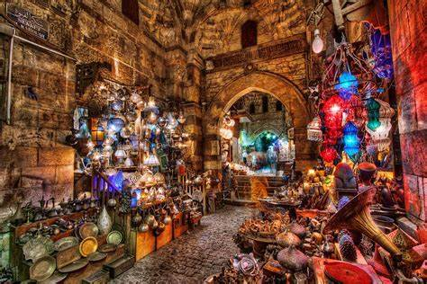

My favriut place to vist in Egypt
The Prymids:

Built during a time when Egypt was one of the richest and most powerful civilizations in the world, the pyramids—especially the Great Pyramids of Giza—are some of the most magnificent man-made structures in history. Their massive scale reflects the unique role that the pharaoh, or king, played in ancient Egyptian society. Though pyramids were built from the beginning of the Old Kingdom to the close of the Ptolemaic period in the fourth century A.D., the peak of pyramid building began with the late third dynasty and continued until roughly the sixth (c. 2325 B.C.). More than 4,000 years later, the Egyptian pyramids still retain much of their majesty, providing a glimpse into the country’s rich and glorious past.
Khan El Khalili:
Khan el-Khalili (Arabic: خان الخليلي) is a famous bazaar and souq (or souk) in the historic center of Cairo, Egypt. Established as a center of trade in the Mamluk era and named for one of its several historic caravanserais, the bazaar district has since become one of Cairo's main attractions for tourists and Egyptians alike. It is also home to many Egyptian artisans and workshops involved in the production of traditional crafts and souvenirs. The name Khan el-Khalili historically referred to a single building in the area; today it refers to the entire shopping district Cairo was originally founded in 969 CE as a capital for the Fatimid Caliphate, an empire which by then covered much of North Africa and parts of the Levant and the Hijaz.